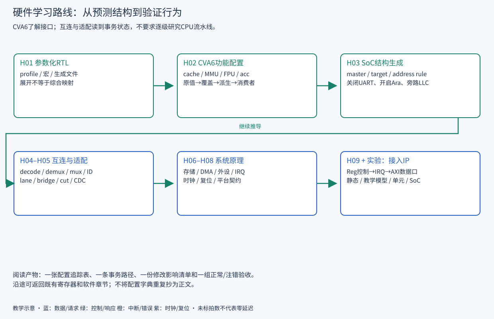

READ · TRACE · BUILD · EXPLAIN
硬件路线 · 配置、结构与系统集成
CVA6 功能与接口概览，以及互连、接口适配和系统集成的实现原理。
给模块分配合适的学习深度，沿配置、结构、事务和验证四条线读同一套 RTL。
前置：已有 MIPS/RTL 经验；先知道 AXI 五通道名称。证据：2026-09-23，源码基准 ae2b69fe0；原理推导与源码静态确认，动态证据另见硬件实验与证据。
SoC 扩展的控制、数据与验证需求
只知道“把 NPU 接到 AXI”还不够。CPU 如何启动它？谁分配地址？返回数据如何找到请求者？它的写入是否会被 CPU 缓存看见？哪种 reset 会丢掉未完成事务？这些问题决定接线是否成立。本主线先学控制口，再学主动访存；当前 NPU/ISP/LVDS 集成仍是未来方案。

硬件知识结构与学习深度
| 顺序 | 章节 | 读到什么程度 |
|---|---|---|
| H01 | 参数化 RTL 与展开 | 识别源码选择、生成文件、条件实例化与综合优化 |
| H02 | CVA6 配置与功能边界 | 理解 cache/MMU/FPU/加速器接口，不逐级研究流水线 |
| H03 | 配置如何生成 SoC 结构 | 手算端口、规则、ID，解释 UART/Ara/LLC 对照 |
| H04 | Crossbar 内部原理 | 读懂 decode、demux、mux、写选择队列及 ID 跟踪 |
| H05 | 桥、位宽、ID 与 CDC | 判断接口能否直接相连，定位拆包、字节 lane 与跨域问题 |
| H06 | 存储、DMA 与 Ara 通路 | 解释命中/回填、并发、完成条件、所有权与原子边界 |
| H07 | 外设内部与中断 | 从寄存器经过 FIFO/状态机到引脚和 IRQ |
| H08 | 时钟复位与运行平台 | 建立 wrapper、存储、IO、调试与启动的接口契约 |
| H09 | 自定义 IP 接入 | 控制→中断→主动访存，给每次升级定义验收 |
| 实验 | 硬件实验、源码证据与缺口 | 区分教学模型、独立单元仿真和 SoC 回归 |
硬件修改的分析方法
- 改的是编译输入、展开参数，还是运行时寄存器？
- 模块是否新增/删除，端口数与类型宽度怎样变化？
- 一笔请求如何到目标，响应如何回原发起者？
- 排队、背压、错误、复位时谁持有状态？
- 软件地址、设备模型、生成头文件有哪些联动？
- 什么现象能证实修改，什么注错能让测试失败？
先使用现有接口和参数，再决定是否修改 IP 内部算法。增加一个 master 通常不需要重写 crossbar 仲裁器；为改善时序随意切断内部路径却可能改变事务依赖。
硬件主线与专题手册的分工
配置手册继续作为字段字典；本主线写因果与结构。外设进阶保留完整寄存器和驱动细节；本主线从硬件事件解释这些寄存器。已有全系统/时钟图和CPU/Ara 功能图作为总览，不要求重读全部软件章节。
源码阅读与验证练习
工作目录：仓库根。以下为只读练习，工具 Python 3 / rg；终端输出即产物，可复制到个人学习记录。通常数秒完成，超过 10 秒可中止检查路径；不启动 SoC 仿真。
python3 docs_codex/learning/scripts/hardware_lab.py topology --scenario ara成功判据：能分别指出 CPU profile 仍需另选、Ara 端口在哪里增加、模型输出不是 RTL 展开。找不到脚本或结果与源码不符时先核对工作目录与版本。
源码依据
本章自测
硬件教材是否要求逐行读完 CVA6？
不要求。追到配置消费者和对外接口即可；互连与适配则需理解保存事务状态的子模块。
能输出一份拓扑表就证明 SoC 正确吗？
不能。教学模型只帮助推导，必须再对照真实参数、展开层级和动态事务。